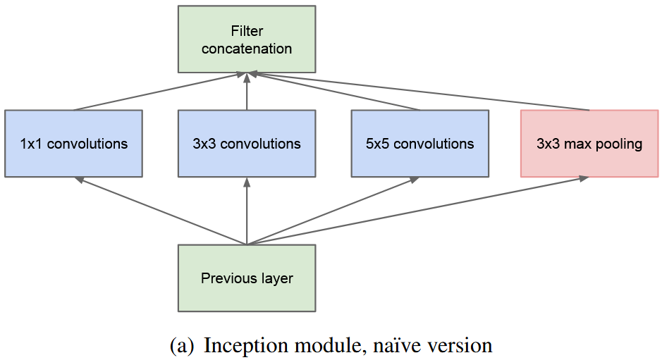
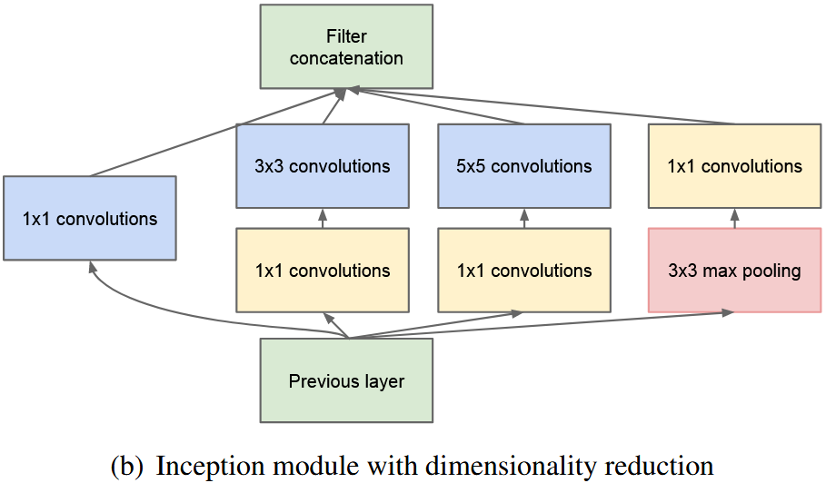
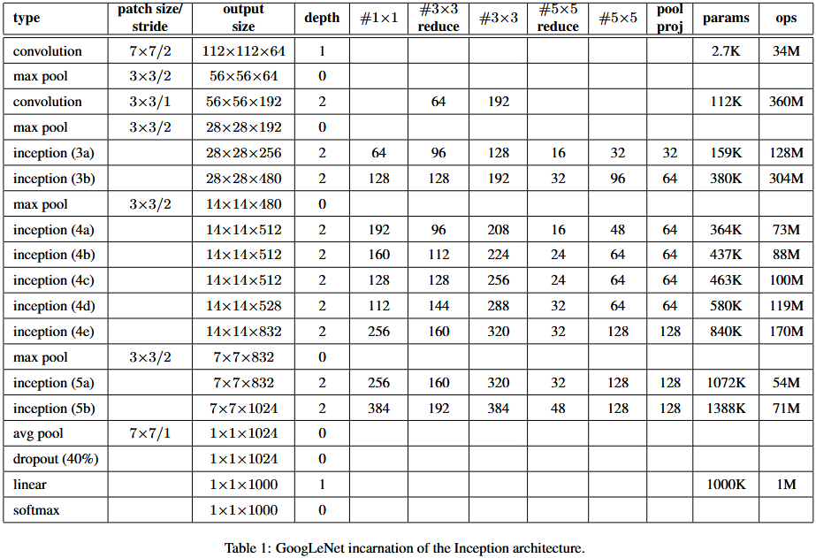
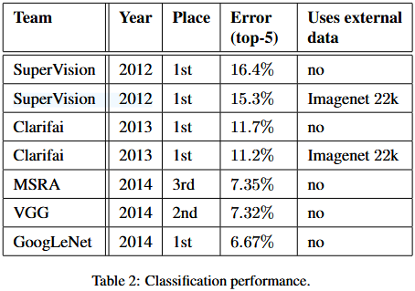
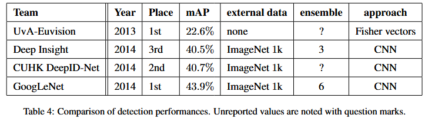

论文笔记 - Going Deeper with Convolutions
1. Information
Title: Going Deeper with Convolutions
Link: Inception V1 Paper
Source: IEEE Conference on Computer Vision and Pattern Recognition (CVPR)
Date: 2015
2. Summary
本文提出了一种名为 Inception 的深度卷积神经网络架构，在提高模型深度和宽度的同时，保持计算开销较低。基于此架构设计的 GoogLeNet 在图像分类和目标检测任务中取得了显著的性能提升。其核心思想是通过多个并行计算路径近似局部稀疏结构，兼顾了计算效率和模型精度。
3. Background
深度学习的发展依赖于更强大的硬件、更大的数据集以及更高效的网络架构。然而，在移动设备或嵌入式环境中，功耗和内存限制要求算法需更高效。
增大网络规模虽能提升性能，但带来了两个问题：
容易过拟合，需要昂贵的高质量标注数据。
参数利用率低，造成计算资源浪费。
稀疏网络可减少计算量，但现代硬件在稀疏计算上效率不高。
4. Research Objective
设计一种高效的网络架构，在降低计算复杂度和参数量的同时，保留深度模型的表达能力。通过使用密集的并行模块近似稀疏性，解决传统稀疏结构难以高效并行的问题。
5. Method
核心思想：
- 使用 1×1、3×3 和 5×5 卷积 提取多尺度特征，同时结合池化操作以捕获全局信息。
- 在大卷积核之前加入 1×1 卷积，用于降维和提升非线性表达能力。
- 通过模块化设计，平衡计算成本和特征提取能力。
网络结构：
- 初版 Inception 模块中并行使用不同卷积核和池化操作，会导致通道数增加过快。

- 改进版通过在每条路径前增加 1×1 卷积降维，有效控制通道数，降低参数量。

- GoogLeNet 总体架构：
- 采用多层 Inception 模块堆叠，深度增加但计算效率较高。
- 引入辅助分类器（仅训练时使用）缓解梯度消失问题。

6. Evaluation
① 图像分类任务
- 数据集：ImageNet
- GoogLeNet 在分类任务中取得了 6.67% 的 top-5 错误率，相比 AlexNet 和 VGG 显著提升。

② 目标检测任务
- 数据集：PASCAL VOC 和 COCO
- 在目标检测任务中，结合 Inception 的 R-CNN 模型在精度和效率上表现出色。

7. Conclusion
- 稀疏性近似：通过并行使用多尺度卷积和池化操作，Inception 模块模拟局部稀疏结构，既降低了计算复杂度，又避免了稀疏计算的硬件瓶颈。
- 模块化设计：使用 1×1 卷积降维，控制通道数增长，有效减少参数量和内存占用。
- 高效性能：GoogLeNet 在分类和检测任务上均实现了卓越的性能，是一种计算资源友好的深度学习模型。
8. Notes
- 1×1 卷积的作用：
- 降维与升维
- 降低参数量
- 跨通道信息融合
- 提高非线性表达能力
- 辅助分类器的设计注意事项：
如果设计不当，可能干扰主分类器优化。
解决方法包括降低辅助分类器损失权重或简化其结构。
论文笔记 - Going Deeper with Convolutions
http://hellochuanyang.github.io/2024/11/19/论文笔记-Going-Deeper-with-Convolutions/